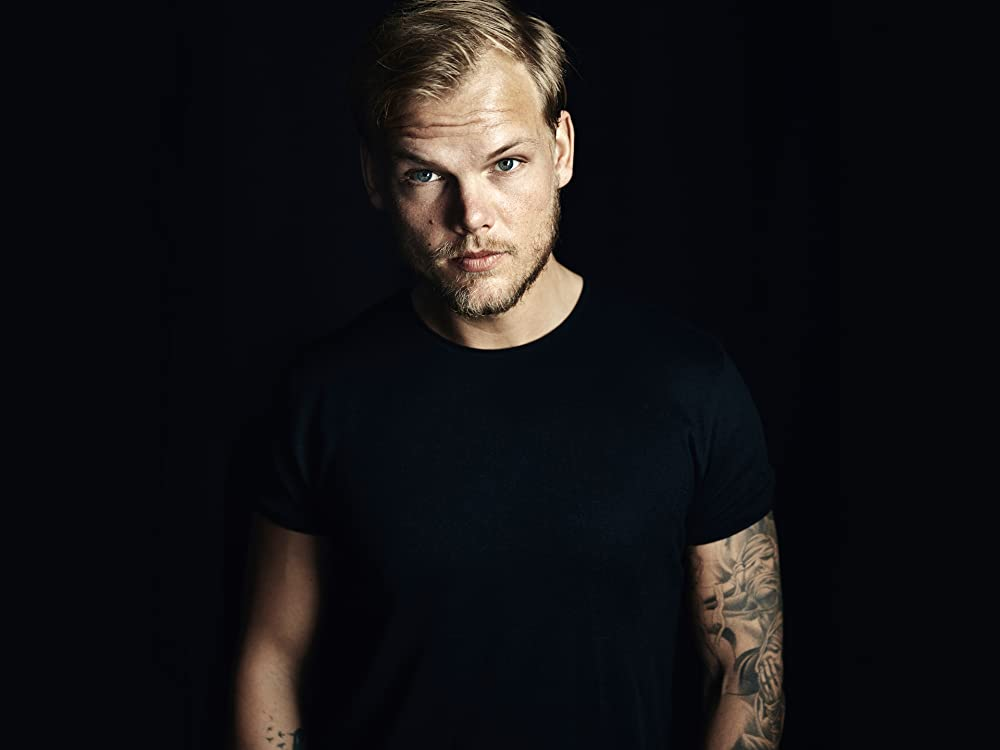
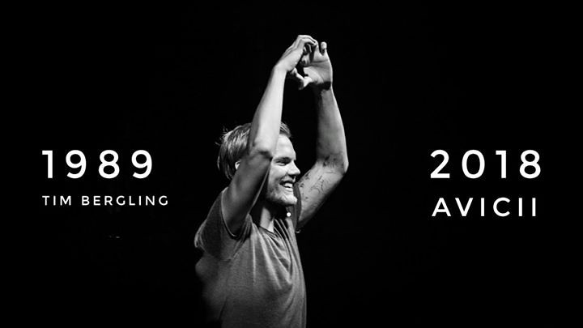

known professionally as Avicii, was a Swedish DJ, electronic musician, and songwriter who specialized in audio programming, remixing, and record producing.
Nationality: Swedish
Born date: September 8th
Dead date: April 20th
Ocupation: Disc-jockey,remixer and producer

Life Timeline
1989-2010: Tim Bergling was born in Stockholm, Sweden,
to Klas Bergling and actress Anki Lidén. He has three siblings, David Bergling,
Linda Sterner and Anton Körberg.
2011-2013: September 8th
2013-2014: April 20t
2014-2015: Disc-jockey,remixer and producer
2016: Disc-jockey,remixer and producer
2017-2018: Disc-jockey,remixer and producer
2019: Disc-jockey,remixer and producer
Professional Timeline
1989-2010: Tim started mixing in his bedroom at the age of 8,
inspired by his brother,who was also a DJ, he began making music at the age of 16.
In May 2007, Bergling signed on with the Dejfitts Plays label. Then, in 2010, Bergling released
the hit song "Seek Bromance", which reached the top 20 in several countries, including Belgium,
France, the Netherlands, United Kingdom, and Sweden. He also remixed Nadia Ali's classic single
"Rapture" for her album Queen of Clubs Trilogy: Onyx Edition.
In October 2010, Bergling signed with the European A&R team with EMI Music Publishing.
2011-2013: In 2011, Bergling released "Levels", which launched him into the
mainstream. "Levels" reached the top ten in Austria, Belgium, Bosnia, Croatia, Denmark, Finland,
Germany, Greece, Ireland, Italy, the Netherlands, Slovenia and the United Kingdom, whilst topping
the charts in Hungary, Norway and Sweden. Bergling was nominated for a Grammy for Best Dance
Recording with "Levels" at the 2013 Grammy Awards. He was nominated alongside Calvin Harris
and Ne-Yo, Skrillex, Swedish House Mafia and John Martin, and Al Walser. The award show took
place on 10 February 2013. From late February to early March 2013, Bergling toured Australia
as one of the headline acts in the Future Music Festival alongside The Prodigy and The Stone Roses.
In late February 2013, Bergling made his first South American tour, with concerts in Venezuela,
Argentina, Colombia, Brazil and Chile.